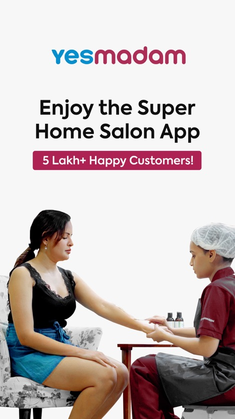
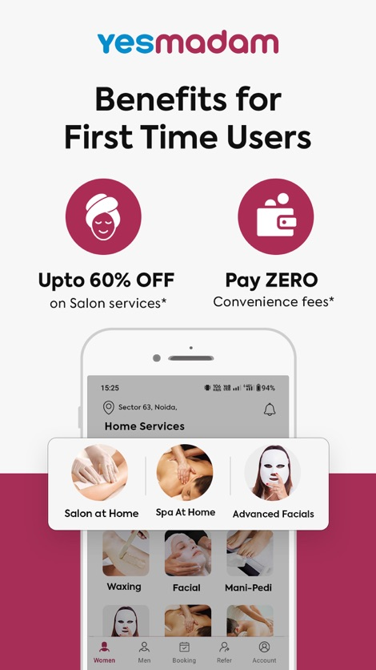
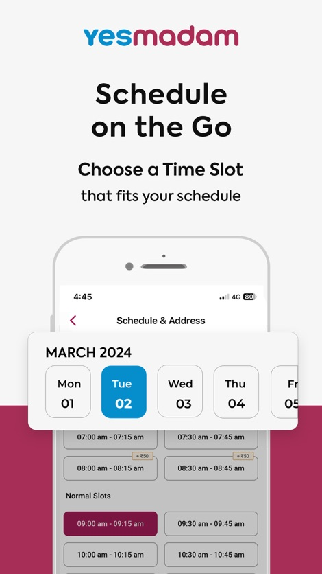

India's bootstrapped at-home beauty & wellness platform — salon & spa services delivered to your door across 55+ cities. An independent product-analyst teardown.
YesMadam is the capital-efficient challenger in at-home beauty — it reached ~₹195 Cr revenue bootstrapped, then took its first institutional cheque (Info Edge) to scale against Urban Company. FY26 revenue doubled, but it slipped into a loss as it invests — so the whole job is the one your post names: convert that spend into booking conversion, higher AOV and repeat, not just more marketing.
Open app → pick a service (facial, waxing, massage, grooming) → choose a slot → a vetted professional arrives with kit and products. It's a two-sided marketplace: customers on one side, beauty & wellness professionals on the other, with YesMadam owning trust, scheduling and — increasingly — product sales (~49% of FY26 revenue).



Urban, time-poor women (and increasingly men) who want salon-grade services at home — convenience, privacy and predictable pricing.
A commission on each service (recently reset to ~8% to win supply), plus subscriptions, and a fast-growing product-sales line that now rivals the services business.
Asset-light and capital-efficient — it got to ₹195 Cr mostly bootstrapped, a very different cost structure from heavily-funded rivals.
FY26 revenue roughly doubled to ~₹195 Cr, but expenses surged and the company moved from a small FY25 profit into a loss — the deliberate cost of its first funded growth phase. The economics hinge on take rate, AOV and the product attach.
Product sales reached ~49% of FY26 revenue. That's a huge lever: attaching a retail product to a service lifts AOV and margin with near-zero extra acquisition cost.
YesMadam lowered partner commission to ~8% to attract professionals. Lower take per booking makes frequency and product attach the levers that have to carry the P&L.
With take rate deliberately low, profit comes from AOV × frequency × product attach — exactly the conversion-and-AOV problem your post describes. A single point of booking conversion or a ₹100 lift in AOV moves the P&L more than another slug of ad spend.
From ₹45 Cr (FY24) to ₹94 Cr (FY25) to ~₹195 Cr (FY26) — and now products are half the mix, so growth is coming from both services and retail.
Urban Company dominates Indian home services at huge scale; YesMadam is the focused, beauty-first challenger. On app-store love they're neck-and-neck — the gap is reach, not satisfaction.
YesMadam 4.73★ (137k ratings) sits a whisker under Urban Company's 4.77★ — but on a rating base ~9× smaller. Satisfaction is there; the job is reach and repeat.
YesMadam can't out-spend Urban Company — so it has to out-convert it: higher booking completion, higher AOV, and a product attach UC under-indexes on.
A dated sample of 600 public Google Play reviews (YesMadam, 2026-10-13 to 2026-11-16). This is real data — the only user-level evidence in this teardown. Reviews are self-selected; user names are not stored. Themes are keyword-tagged, and the average rating per theme shows where the pain is.
Keyword-tagged · sorted by mentions · red average = the pain
Representative reviews · verbatim
At 3.56★ this is the lowest-rated app here, and the cause is reliability, not price. Service quality is mentioned in 62% of reviews; no-shows, refunds and cancellations (avg ~1.2–1.7★) dominate the complaints — arrival SLA and professional vetting are the growth unlock.
The company facts above are real. The rest is how I'd instrument and grow the product — aimed squarely at the levers your post named: conversion, AOV and growth. Funnel and cohort figures are illustrative frameworks, clearly marked.
One number the org can move, decomposed into the levers a team owns.
Two of those three branches — conversion into a first booking and AOV — are precisely what your post asks an analyst to own.
The biggest leak in on-demand services is usually slot selection → confirmed booking (price shock, no slot, trust). Fix that and AOV via add-ons and product attach, and you lift revenue without spending a rupee more on acquisition. Retention should plateau once a customer has a trusted professional they re-book.
Each tied to a lever your post named, with a primary metric and a guardrail so we don't win one number by breaking another.
| Hypothesis | Lever | Primary metric | Guardrail |
|---|---|---|---|
| Add-on & bundle upsell at checkout ("add a cleanup for ₹X") raises basket size. | AOV | AOV, add-on attach | Booking completion |
| Product attach — recommend the retail product the pro just used, one-tap post-service. | AOV · margin | Product attach rate | Service NPS, returns |
| Honest slots & price — show real availability and all-in price before login to cut slot/price drop-off. | conversion | View → confirmed booking | Cancellations |
| Re-book your pro — a membership / reminder to re-book the same trusted professional. | frequency | Bookings / user / quarter | Contribution / booking |
The second-order reads a hiring manager actually wants.
Products went from a side-line to ~49% of revenue. That's higher-margin, acquisition-free growth — and a signal that the attach rate deserves its own dashboard and owner.
With commission reset to ~8%, revenue per booking is thin. The only ways up are bigger baskets and more frequent re-bookings — conversion and AOV, not take rate.
Reaching ₹195 Cr mostly bootstrapped means a lower burn-to-revenue than funded rivals. The analyst's job is to protect that edge — prove every growth rupee pays back.
Note: Funnel, cohort and per-booking economics charts are clearly-labelled illustrative frameworks, not reported YesMadam figures. Company facts are real and sourced.
Lapaas Voice / ScoopEarth / Indian Retailer — FY26 operating revenue ~₹195 Cr (~2× from ₹94 Cr FY25), slipped into loss, products ~49% of revenue · Inc42 — revenue history (₹45 Cr FY24), ~8% partner commission, 55–60 cities · funding coverage — ₹50 Cr Info Edge Growth round (May 2026) at ~₹750 Cr valuation; larger round in talks · Shark Tank India S3 — ₹1.5 Cr deal announced on air but did not proceed; company stayed bootstrapped · Apple App Store Search API — live iOS ratings (YesMadam, Urban Company). Figures as of 2026.